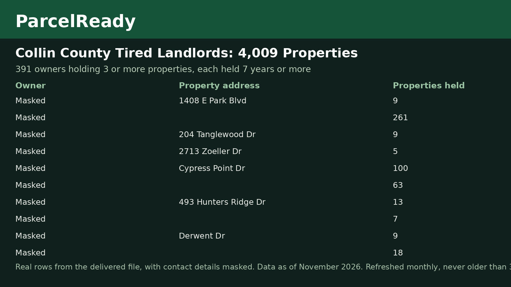

$79 one time
4,009 records, data as of November 23, 2026. Yours as of the pull you buy; a one time file does not update itself, and we say so plainly.
Refreshed monthly, plus a full rebuild after each annual certified roll.
County records pack · Collin County · Tired Landlords
4,009 properties held by 391 Collin County owners with 3 or more properties, each held 7 years or more.
We do the work. You get the leads.
Built for: Buyers who look for portfolio owners in Collin County whose holdings have been in place a long time.
Coverage: Collin County, in the Dallas Fort Worth metro.
The label promise: if this pack does not match what this page promises, tell us within 30 days and we will fix it or refund the pack.
Data as of November 23, 2026. Refreshed monthly, plus a full rebuild after each annual certified roll. Sold and delivered on this site.

What is inside
$79 one time
4,009 records, data as of November 23, 2026. Yours as of the pull you buy; a one time file does not update itself, and we say so plainly.
Refreshed monthly, plus a full rebuild after each annual certified roll.
Membership will deliver every refresh to your inbox automatically, so the file you work from is never the stale one. It is not on sale yet.
Join the follow up listMembership checkout for this pack opens on the store next; the follow up list hears first.
Free sample, viewable right here
What you see here is the proof surface: real rows drawn evenly from the full file, real counts, and the same fields the pack carries, with contact details masked on screen. The free sample file itself, 10 percent of the full file (15 rows at minimum, 50 at most, the same rule on every pack in the catalog), carries every field exactly as it ships, and it is delivered by email below. Inspect the structure and the counts here; the usable file comes by email.
LIVE PREVIEW · COLLIN COUNTY TIRED LANDLORDS: OWNERS WITH 3+ PROPERTIES HELD 7+ YEARSPULLED NOVEMBER 23, 2026
Preview rows shown with contact details masked. A blank field means it could not be verified. It is never guessed. The delivered sample carries every value.
The catalog is building state by state. Tell us the state and the category, and sample requests shape the build order.
Request a free sample More Texas data